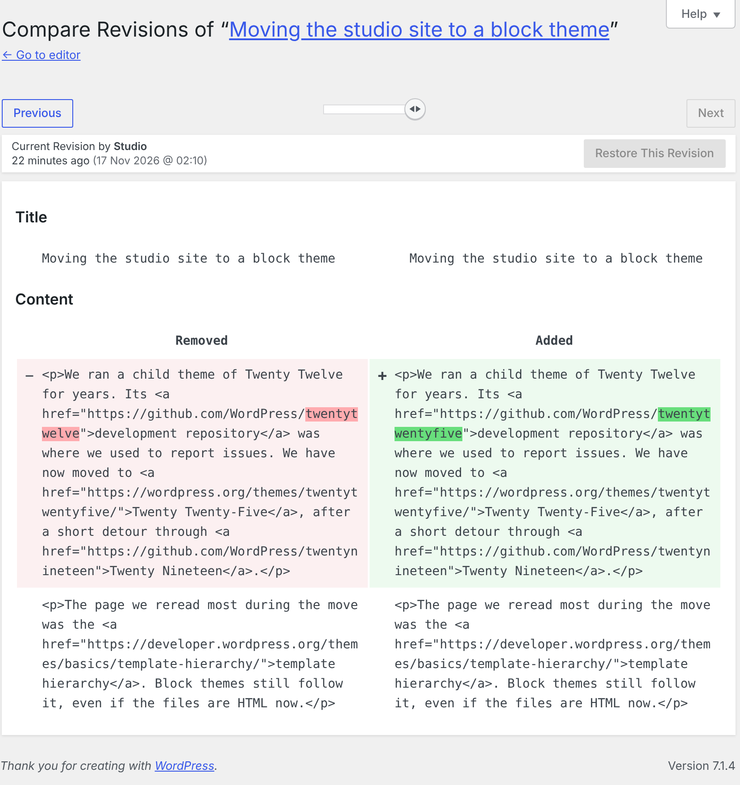

Linkrounds, a broken link checker for WordPress
Finds broken links and images from your own server, and calls a link Broken only after it fails twice, an hour apart. No account, no link limit.
![Tools > Linkrounds on the demo blog with only the free plugin active, after the second checks and our fixes: 'Last scan finished November 17, 2026 4:26 pm: 63 different addresses checked, used in 70 places.' and the tabs All (68), Broken (6), Redirected (7), Inconclusive (6), OK (49), Ignored (0). On a wide screen the search box, Bulk actions and the first result row follow: a docs.godotengine.org tutorial address with its link text, the post it is in with Edit and View, a red Broken badge, 404 and 'Page not found (404).'](img/results-phone.png)
Free plugin: download linkrounds.zip (77 KB, version 1.2.5)
Linkrounds Pro: $19 once, up to 3 sites Buy for $19
Pro adds scheduled scans, an email of what broke and CSV to the free plugin, which stays free. Install steps are below; if you install Pro first, it waits and shows you where to get the free plugin. Polar checkout · download after payment · no renewal · no licence check · 14-day refund · details. More than 3 sites: $79 once, by email only for now (support@ochrestack.com).
Five answers, in plain words
- Broken: the page is not found (404) or gone (410), or the domain does not exist, and the same thing happened again when Linkrounds checked a second time, at least an hour later.
- Looks broken: it failed that way once. Linkrounds checks it again by itself, and it becomes Broken only if it fails again. You can fix it now.
- Redirected: the address forwards to another one that works, and you see where it ends. If it ends on the site's home page or a search page, which often means the page was removed, it says so.
- Inconclusive: the other site refused the check, wanted a login, asked us to slow down, had an error or did not answer. Linkrounds can't tell if such a link works, so it never calls it Broken.
- OK: the link works.
Straight after the first scan nothing is Broken yet: the links that failed once show as Looks broken, with the time of their second check.
![Tools > Linkrounds on our 300-post test archive straight after the first scan: 'Last scan finished November 17, 2026 4:16 pm: 708 different addresses checked, used in 2,702 places.', then '71 different addresses look broken, used in 251 places. They failed once and are checked again by themselves from November 17, 2026 5:10 pm (in 53 minutes). Each becomes Broken only if it fails again. You can fix them now. Show all 251 places', the tabs All (2,702), Broken (0), Looks broken (251), Redirected (49), Inconclusive (0), OK (2,402), Ignored (0), and the first rows: php.net manual pages with a yellow Looks broken badge, 404 and 'Page not found (404). Second check due after 5:10 pm.'](img/first-scan-archive-phone.png)
Watch it work
Fixes you can undo
- Unlink removes a link and keeps its words. Edit address changes one link, and the new address is checked straight away.
- Tick rows and use Bulk actions: only the rows you ticked change. In our test on the 300-post archive, ticking 2 of the 20 rows on screen changed 2 of the 297 posts, and in each only the link's own tags were removed.
- Every fix to a post or page is saved as a normal WordPress revision, so you can put the old version back from its Revisions screen (menu items have no revisions in WordPress, and the message says so).


Linkrounds Pro
- Scheduled scans: daily, weekly or monthly, at the hour you choose, in your site's time zone.
- An email report after each scheduled scan, to the addresses you choose: each address that broke since the last report, once, with every page it is on, why it failed, and a link to fix it.
- Send a test email tells you straight away whether your site can send mail. If a report is ever refused, the Schedule & email tab says when and why, and those links go into the next report.
- Export CSV of the results you are looking at, for a client or an editor, safe to open in a spreadsheet.
- One payment. No renewal, no licence check, and nothing stops working.
The start of a report, from our demo blog:
Subject: [Low Poly Lane] Linkrounds: 3 addresses broke since the last report (used in 5 places) 1. https://docs.godotengine.org/en/stable/getting_started/step_by_step/your_first_game.html Why: Page not found (404). Used in 3 places: - On: “Our first Godot import: a low-poly lighthouse” http://lowpolylane.test/our-first-godot-import-a-low-poly-lighthouse/ …
Linkrounds Pro: $19 once, up to 3 sites. Buy for $19
Needs the free plugin above. No renewal, no licence check, 14-day refund.
The whole email from the demo blog
Pro 1.2.2 on our demo blog, whose mail goes to a file because it has no mail server. The daily scan was set for 6:00 pm and ran at 6:00 pm, in 23 seconds. Pro normally sends the report an hour after the scan (here 7:05 pm); we did not wait and ran the report step by hand at 6:01 pm, so this is the email the plugin writes. The first report lists everything broken at that moment: the 3 addresses still Broken after our fixes, used in 5 places.
To: studio@lowpolylane.test
Subject: [Low Poly Lane] Linkrounds: 3 addresses broke since the last report (used in 5 places)
Linkrounds finished a scheduled check of every link on Low Poly Lane (http://lowpolylane.test/) on November 17, 2026 6:00 pm.
This is the first report, so it lists every address that is broken now: 3, used in 5 places. Each address is listed once, with every place it is used.
1. https://docs.godotengine.org/en/stable/getting_started/step_by_step/your_first_game.html
Why: Page not found (404).
Used in 3 places:
- On: “Our first Godot import: a low-poly lighthouse” http://lowpolylane.test/our-first-godot-import-a-low-poly-lighthouse/
Link text: “the “your first game” tutorial”
- In a navigation menu, item “Godot tutorial”
- In the navigation menu “Main”, link “Godot tutorial”
2. https://github.com/WordPress/twentytwelve
On: “Moving the studio site to a block theme” http://lowpolylane.test/moving-the-studio-site-to-a-block-theme/
Link text: “development repository”
Why: Page not found (404).
3. https://docs.blender.org/manual/en/latest/files/import_export/scene_gltf2.html
On: “Resources” http://lowpolylane.test/resources/
Link text: “glTF import and export”
Why: Page not found (404).
See and fix them: http://lowpolylane.test/wp-admin/tools.php?page=linkrounds&category=broken
You get this email because your address is set under Tools > Linkrounds > Schedule & email. Change the addresses or turn the schedule off there.
Tested on two sites we built
- A generated 300-post archive (708 different addresses in 2,702 places; Linkrounds 1.2.5, WordPress 7.1.4, November 17, 2026): the 71 addresses that failed once all became Broken at their second check, and we requested each of the 71 ourselves: all 71 returned 404.
- A demo blog we built (63 addresses in 70 places; Linkrounds 1.2.5 and Pro 1.2.2, the same day): the 8 addresses it called Broken were seven web pages that returned 404 when we requested them ourselves and one image we had deleted. The 6 addresses that refused the check stayed Inconclusive, and refused our request too (403).
- So 0 of the 79 Broken addresses were working when we requested them ourselves. The pictures on this page are screenshots of those two sites.
How we tested, with every number and time.
Details
- Buying Pro: secure checkout by Polar, which delivers
linkrounds-pro.zipafter payment. The receipt also carries a licence key; keep it as proof of purchase, because Pro never asks for it. If it doesn't work as described and we can't fix it, email us within 14 days for a full refund (terms). Every future Pro update is included; download it from your purchase email or Polar's customer page. - Requires WordPress 6.5 or newer and PHP 7.4 or newer. Linkrounds 1.2.5 and Pro 1.2.2 were tested on WordPress 6.5.14 and 7.1.4, each with PHP 7.4.33 and 8.3.6. Not tested: Windows servers, other WordPress or PHP versions, multisite in a live install (the 14-day refund applies).
- Not checked in version 1: page-builder layouts stored outside the post content, custom fields, widgets, comments and theme options. All limits.
- GPL-2.0-or-later. The full, readable source of each plugin is inside its zip.
Privacy
Your own server checks each linked address. Nothing about your site, your users or your content goes to us or to anyone else: no account, no tracking, no licence or update check. Pro's emails go only to the addresses you set. Exactly what is sent.
Install
- Download linkrounds.zip. Do not unzip it.
- In WordPress, open Plugins > Add New Plugin > Upload Plugin (the menu item is called Add Plugin in WordPress 7.1), choose the zip, Install Now, Activate.
- A green notice says where Linkrounds is. Click Open Linkrounds in it (or open Tools > Linkrounds), then click Scan now.
- For Pro, upload
linkrounds-pro.zipthe same way, then open Tools > Linkrounds > Schedule & email.
An administrator installs it; Editors can then scan, fix links and, with Pro, export the CSV. More in the quick start. Support: support@ochrestack.com.
Questions
Do I need an account, an API key or a credit card for the free plugin? No. It runs inside your WordPress site. There is nothing to sign up for and no link limit.
Is Pro a subscription? No. $19 once for up to 3 sites. There is no renewal and no licence check, nothing stops working, and every future Pro update is included.
A link works in my browser. Why is it Inconclusive? Many sites refuse automated checks, ask for a login or slow down busy visitors. Linkrounds can't tell whether such a link works, so it says so instead of calling it Broken.
Does it need my site to have visitors? WordPress runs background work when someone visits. On a quiet site, such as a staging copy, keep the Linkrounds screen open while it scans and it keeps going by itself. Pro's scheduled scans start on the first visit after the hour you chose.
Linkrounds Pro: $19 once, up to 3 sites. Buy for $19
Needs the free plugin, which stays free: linkrounds.zip. More than 3 sites: $79 once, by email (support@ochrestack.com).